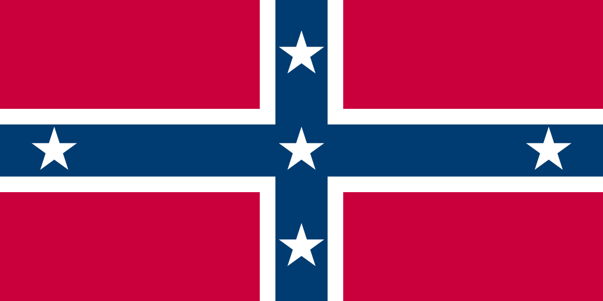
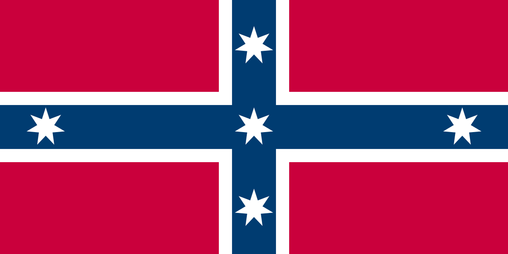
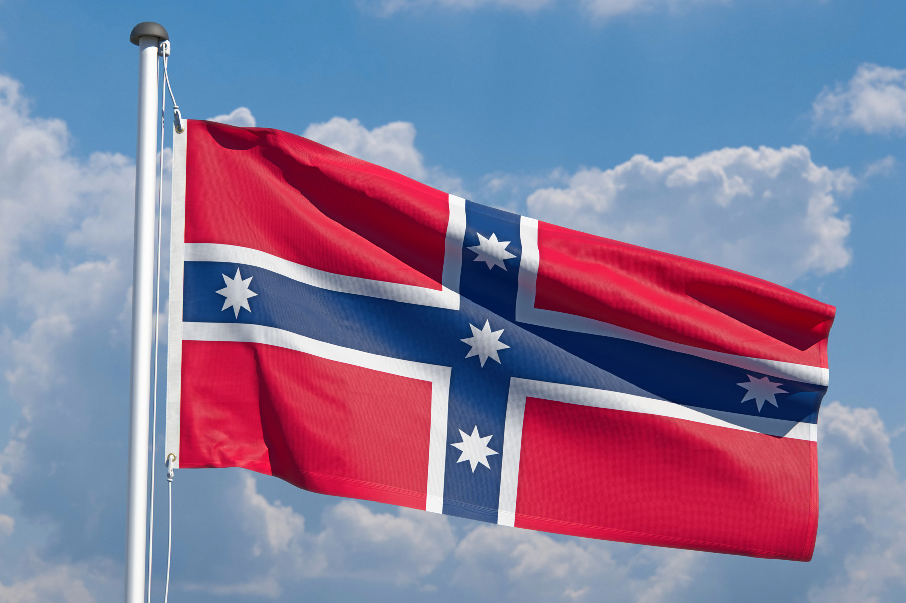
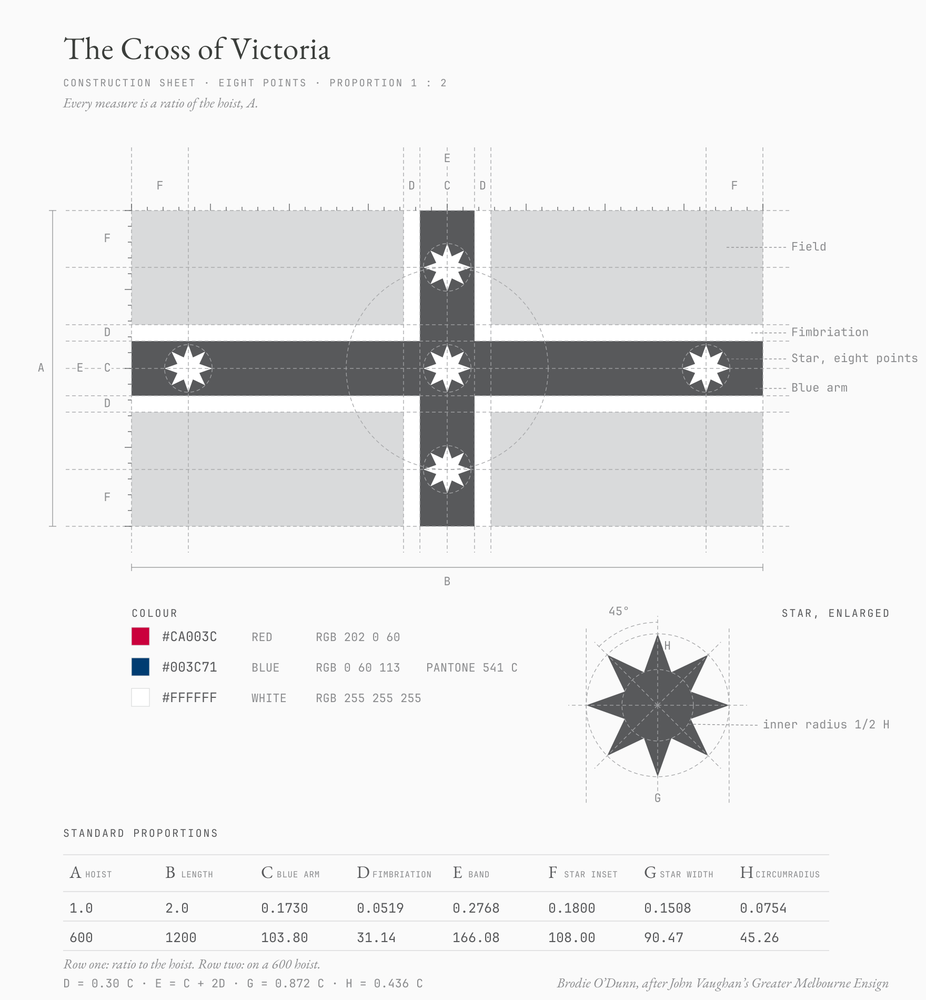

The Cross of Victoria is a proposed state flag for Victoria, Australia: a blue cross edged white on a red field, with five white stars. It is not a new design. It redraws the Greater Melbourne Ensign, which John Vaughan designed in 1988Australiana Flags, n.d.Flags of the World, 2026, and the centre of the Victoria Police badgeFlags of the World, 2016. It would replace the present flag, a British Blue Ensign with the state badge added, in use since 1870Department of Premier and Cabinet [DPC], 2024. I drew it in 2026 with stars of five, seven or eight points, and a variant that keeps the Union Jack.
Meaning
I believe a flag should say something about the people who fly it. Mine names four things people need: family, a group to belong to, dignity, and the power to choose their own way. Each part of the flag carries one of them.
The cross
Two lines meet at the centre, as two families meet when a household begins. From there the arms run out four ways, the directions a life can take.
Red, for family
Red stands for family, the reason each of us exists. The cross cuts the red into four quarters: mother, father, son and daughter.
White, for belonging
White stands for belonging: peace and unity among friends, neighbours and the wider group. It edges the cross and holds the red and the blue together.
Blue, for dignity
Blue stands for the world everyone shares: sky, sea and land. Everyone who lives under it deserves the same dignity and respect. Blue is also Victoria’s state colour, Pantone 541Department of the Prime Minister and Cabinet [PM&C], n.d..
Stars, for choice
The stars stand for choice: the power to run your own life, and to protect yourself and the people you love. Their points face every way, because a person can go in any direction. There are five, for the stages of a life: infant, youth, adult, elder and ancestor.
Proposal
The flag comes in three versions that differ only in their stars. Five points follow the Victoria Police badge, where the design began. Seven follow the Australian National FlagDepartment of the Prime Minister and Cabinet [PM&C], 2022, p. 65. Eight follow the Greater Melbourne Ensign, the Federation Flag and the Eureka Flag, and eight is the version I prefer.
I also drew a variant with the Union Jack in the canton, as on the Federation Flag. It suits Victorians who want a new flag while Australia keeps the Crown. I offer it as a step between the present flag and this one.

Five points.



Seven points.


Eight points. Preferred.


Justification
I did not set out to invent a flag. The Cross of Victoria continues a design that Victoria already has, on the Greater Melbourne Ensign and on the badge of Victoria Police. I have redrawn it for the whole state. I share the credit with John Vaughan, who designed the ensignFlags of the World, 2026, and with Victoria PoliceFlags of the World, 2016.
Victoria needs a flag of its own because it shares the present one. That flag is the Blue Ensign, a British naval flag, with the state badge added. Britain set this pattern for every Australian colony in 1865DPC, 2024, and every state still flies it. Only the badge tells the six flags apartPM&C, 2022, p. 46. A flag common to all six says little about any one of them.
My design began with the Victoria Police badge. Its centre is a blue cross edged white on red, with five white stars of five pointsFlags of the World, 2016. I drew my first version from it. The badge showed me that the state already wears this cross.
I then found the Greater Melbourne Ensign, which confirmed the choice. John Vaughan designed it in 1988Australiana Flags, n.d.Flags of the World, 2026. It places the five stars of the Southern Cross on a “dark blue Eureka Stockade-style cross”, edged white, on the red and white of MelbourneAustraliana Flags, n.d.. A ship, the Lady Nelson, fills the corner next to the pole. My version removes the ship and resets the colours and the proportions. The ensign’s stars have eight pointsFlags of the World, 2026, and I now prefer eight. Two Victorian designs carry the same cross, so I kept it.
Both designs continue an old pattern in Australian flags: stars on the cross of St George. As early as 1823 or 1824, a design put four stars on that red crossPM&C, 2022, p. 60. In 1831 Captain John Nicholson, Harbour Master of Sydney, drew five stars of eight points on “a large dark blue St. George’s cross”Vaughan, n.d.. His flag served as the unofficial flag of Australia for 70 years and became known as the Australian Federation Flag. In 1854 the gold miners at Ballarat raised the Eureka Flag, a white cross on blue with five stars of eight pointsPM&C, 2022Smith, 2026. The Southern Cross of the national flag has since overshadowed this pattern, and the Cross of Victoria returns to it.
The colours come from Victoria as well. Red and white are the City of Melbourne’s official coloursAustraliana Flags, n.d.. Blue is the state colourPM&C, n.d.. I keep all three: blue for the cross, white for its edge and red for the field.
Modern guides to flag design prize the new, and I disagree with them. Ted Kaye’s guide tells designers to “avoid duplicating other flags” and permits likeness only to show a connectionKaye, 2006. I hold that likeness is no fault. England and Genoa fly the same cross of St George. Indonesia and Monaco fly almost the same flag, and Poland flies the same two colours the other way up. None is a lesser flag for it. A flag gets its worth from its history and from the people who use it, and this design has both.
So the Cross of Victoria claims little for itself. Its cross and stars come from Vaughan’s ensign and the police badge, and behind them from Eureka and the Federation Flag. My part is the redrawing: one set of colours, fixed measures, a choice of stars and no ship. Victoria could adopt it.
Inspiration
Greater Melbourne Ensign (1988)
The design I have redrawn.
John Vaughan designed it in 1988Australiana Flags, n.d.Flags of the World, 2026. It sets the five stars of the Southern Cross on a blue cross edged white. Its red and white are the colours of the City of Melbourne, and the sailing ship Lady Nelson fills the cornerAustraliana Flags, n.d..
Diagram drawn from the published description, for comparison.
Victoria Police (current)
The same cross, on the state’s own badge.
The force flies a blue ensign with its badge in the fly. The centre of the badge is a disc with a blue cross edged white on red, holding five white five-pointed starsFlags of the World, 2016.
Diagram: the badge centre drawn in place on the ensign, from that description. The full crest is on the Victoria Police website. Not authorised by, endorsed by or connected with Victoria Police.
Australian Federation Flag (1831)
The older pattern: a cross with five stars.
Captain John Nicholson, Harbour Master of Sydney, drew it on a chart dated 31 December 1831Vaughan, n.d.. It was a popular symbol of the federation movement in the 1880s and 1890sPM&C, 2022, p. 62. Prime Minister Edmund Barton put it forward in 1902 as an alternative national flag. Its Union Jack in the canton returns in the variant.
Image by User:Martyman, CC BY-SA 3.0

Construction
The construction sheet gives every measure needed to draw the flag.



| Proportion | 1:2, height to length |
|---|---|
| Cross | Blue, edged white, centred, reaching all four edges. The blue arm is 17.3% of the height. The white edge is 30% of the arm on each side. |
| Stars | Five, white, one point up: one at the crossing and one on each arm, centred 18% of the height in from the edge. Each is 87.2% of the arm wide. |
| Points | Eight, inner radius 1/2 of the outer. Options: five (0.382) or seven (4/9). |
| Colours | #CA003C #003C71, Pantone 541 C #FFFFFF |
| Union Jack variant | The Union Jack at 1:2 fills the upper corner next to the pole, in the flag’s own colours. The upright arm moves to 43.1% of the length from the pole. |
| Making | The reverse is a mirror image. Heading 3 to 5% of the length. |
The white edge follows an old rule of heraldry: “colour cannot be placed upon colour, nor metal upon metal”Fox-Davies, 1909, p. 85. Red and blue are colours and white stands for the metal silver, so white must part them. Contrast gives the same answer. Red on this blue measures 1.90:1, below the 3:1 that web accessibility guidelines ask of a graphicWorld Wide Web Consortium [W3C], 2018. White measures 11.14:1 on the blue and 5.87:1 on the red.
References
- Australiana Flags. (n.d.). Greater Melbourne Ensign 1988. https://australianaflags.com.au/flags/greater-melbourne-ensign-1988/
- Department of Premier and Cabinet. (2024, August 26). About the Victorian flag. Victorian Government. https://www.vic.gov.au/about-victorian-flag
- Department of the Prime Minister and Cabinet. (n.d.). Symbols of Victoria. In Australian symbols. https://www.pmc.gov.au/resources/australian-symbols-booklet/state-and-territory-symbols/symbols-victoria
- Department of the Prime Minister and Cabinet. (2022). Australian flags (3rd ed.). Commonwealth of Australia. https://www.pmc.gov.au/sites/default/files/resource/download/australian-flags-booklet-2024-11-18.pdf
- Flags of the World. (2016, February 27). Victoria Police (Australia). https://www.crwflags.com/fotw/flags/au_vicp.html
- Flags of the World. (2026, August 8). City of Melbourne (Victoria, Australia). https://www.crwflags.com/fotw/flags/au-vi-me.html
- Fox-Davies, A. C. (1909). A complete guide to heraldry. T. C. & E. C. Jack. https://www.gutenberg.org/ebooks/41617
- Kaye, T. (2006). “Good” flag, “bad” flag: How to design a great flag. North American Vexillological Association. https://nava.org/good-flag-bad-flag
- Smith, W. (2026, August 29). Flag of Australia. In Encyclopaedia Britannica. https://www.britannica.com/print/article/1354967
- Vaughan, J. C. (n.d.). Flags of Australia. Fédération internationale des associations vexillologiques. https://fiav.org/wp-content/uploads/2021/04/13-11-Vaughan-FlagsOfAustralia.pdf
- Victoria Police. (n.d.). Disclaimer and copyright. https://www.police.vic.gov.au/disclaimer
- World Wide Web Consortium. (2018). Web content accessibility guidelines (WCAG) 2.1. https://www.w3.org/TR/WCAG21/
Rights
The Cross of Victoria is free for anyone to use, copy and change. I claim no ownership of the design. It comes from John Vaughan’s Greater Melbourne Ensign and from the Victoria Police badge, and I thank both. Neither has endorsed this proposal, and nor has the Government of Victoria.
The Victoria Police crest is a registered trade mark of the State of VictoriaVictoria Police, n.d., so this site shows only my own diagram of it. Other images and typefaces keep their makers’ licences. Questions: brodie2015@icloud.com.